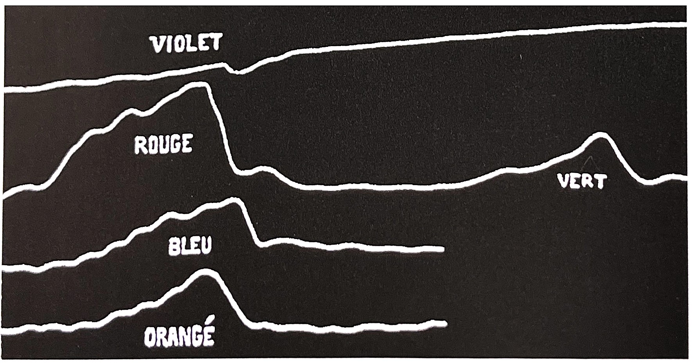

20세기 초 추상화가 바실리 칸딘스키Wassily Kandinsky, 1866~1944는 미술과 음악의 연관성을 지적하며 음악이 어떤 이미지를 환기시킬 수 있는 것처럼 미술도 색을 통해 그를 묘사하는 언어의 도움 없이 그 자체로 충분히 이미지를 나타낼 수 있다고 하였다. 그에 따르면 보색의 대비나 한색과 난색의 대비는 음악에서와 같은 리듬감을 창출하며, 색채 고유의 내재된 느낌은 그것이 형상을 지니고 있지 않더라도 보는 사람의 감정적인 반응을 불러일어킬 수 있다고 하였다.
색감정은 1차적으로는 색을 통해 느끼는 심리적, 생리적인 반응이며, 2차적으로는 그 이상의 복잡한 표현력으로 다양한 의미와 상징적 역할을 하는 것이라 할 수 있다, 색은 우리 환경을 이루고 있는 많은 요소들 중에서 감각적 요인으로 사물에 일차적으로 시선을 머물게 하며 그에 따라 사람의 정서를 변화시키는 중요한 역할을 한다. 색에 대한 감정은 다소 주관적이라 할 수 있지만, 몇몇 대표적 색들의 효과는 포괄적인 의미를 지닌다. 예를 들어 색 스펙트럼의 빨강계열의 색은 따뜻한 색이고 빨강, 주황, 노랑을 포함하며, 이 따뜻한 색들은 따뜻함과 편안함의 느낌에서 화남과 적개심의 감정에 이르기까지 다양한 감정을 불러 일으킨다.
사람들이 어떤 색을 볼 때 색과 형태를 따로 분리시켜 지각하는 것은 아니지만 다양한 색으로 표현된 우리 주변의 사물들은 그 표면에 지닌 색을 통해 그 색이 지닌 고유성으로 다양한 문화권의 사람들에게 이전에 받아 들여진 정보나 경험의 연상작용을 통해 다양한 의미와 상징, 그리고 감정을 전달한다. 이렇듯 상징성과 사람의 감정을 전달할 수 있는 색은 국가, 지역, 문화, 관습, 풍토에 따라 같은 색이라 하더러도 다른 의미와 상징성, 그리고 의미를 지닌다.
색의 조화론[3]미술사가들 사이에서 꾸준히 반복되어 나타나는 회복력을 유지해온 조화 원칙의 한 측면은, 음악적 조화와의 유사성이다. 이는 공감각으로 알려진 심리학의 분파를 통해서이거나 다 느슨한 연합을 통해서 이루어진다. 공감각 연구의 절정기는 약 1930년까지였고, 그것은 이 시대, 특히 독일과 러시아 화가들의 색채에 대한 태도에 두드러지는 영향력을 끼쳤다. 공감각의 경우는 최근 심리학자들 사이에서 다시 관심의 대상이 되고 있다. 그러나 그것은 더 이상 마치 19세기 초에 그랬던 것처럼 시각적 미학에서 어떤 역할을 할 것 같지는 않다. 한편, 색채와 음악 사이의 더 느슨한 공감은 화가들과 색채 조화에 대한 다른 연구가들을 계속 매료시킨다. 칸딘스키, 클레의 작품에서 보이는 색채에 대한 관심과 음악적 기술 사이의 연결은 비평가들을 항상 감동시켰다. 그리고 칸딘스키의 경우, 이제 우리는 쇤베르크와 그의 우정이 칸딘스키가 색채 조화 이후의 전통적인 경쟁을 그만 두도록 도왔다는 것을 더욱 확신할 수 있다. 그가 '예술에서의 정신적인 것'On the Spiritual in Art에서 썼듯이 그것은 더 이상 시대와 조화되지 않았다.
감각의 통합[3]색채에 대한 개념과 색채에 대한 지각 사이에서 가장 흥미롭고 가장 해결되지 않은 문제들 중의 하나는 두감각이 동일한 자극에 의해 도통시에 유발되는 비자발적 심리적 기제인 공감각이다. 공감각은 아리스토텔레스에 의해 처음느로 표현된 ('아니마, De anima, Ⅱ,6, 418b; Ⅲ,1,425a-b) 각각의 다섯가지 감각이 그 자체의 분리된 작용 영역을 가진다고 보는 전통적인 학설과 상충된다. 이는 또한 요하네스 뮐러Johannes Muller의 현대적 이론이자 여전히 광범위한 영향을 미치고 있는 '특정 신경 에너지' specifid nerve energies원리에서의 견해와도 상충되기 때문에 19세기 후반에 광범위하게 연구되었다. 감각은 외부 자극의 본질이 아니라 다섯 가지 감각의 내부적 특성에 의존하기 때문에 동일한 자극이 서로 다른 신경을 자극한다면 서로 다른 감각을 유발하거나 그 반대일 수 있다는 뮐러의 주장은 19세기 후반 영국의 의사인 존 엘리엇 John Elliot에 의해 예견되었다. 엘리엇의 감각에 대한 연구는 1785년 독일어로 번역되어 뮐러에게 알려졌다. 그러나 그 논의를 심리-생리학적 논쟁의 핵심으로 가져온 것은 헬름홀츠의 선생인 뮐러의 '생리적 종합 입문서'comprehensive handbook of physiology,1838에 의해서다. 뿐만 아니라 이 책은 세상의 주관적 표상을 일반적으로 이해하는데 오랫동안 지속적으로 영향을 미치게 되었다.
뮐러가 살아 있는 동안 공감각의 몇몇 사례는 상상력이 발휘되는 문학에서뿐만 아니라 의학 문헌에서도 보고되었도, 특히 독일, 스위스, 영국 심리학자들의 주의를 끌기 시작하였다. 페흐너G.T. Fechner는 1876-7년 '미학 입문서'Primer of Aestbetics에서 색채 공감각의 몇몇 사례를 연구하였다. 나아가 1890년까지 보고된 사례가 많아져 국제생리심리학회는 체계적 조사를 위한 위원회를 만들게 되었다.
공감각에서 가장 친숙한 종류는 색청 공감각audition coloree이며 가장 잘 알려진 색청 공감각의 유형은 음악이다. 그 관계가 서구 전통에서 조화로운 것으로 간주되는, 연속적인 스펙트럼 색채에서 지점들을 찾는 것이 얼마나 매력적으로 보이는가를 알기는 쉽다. 뉴턴은 이러한 종류의 연구에 막대한 권위를 부여했다. 19세기 후반에 매우 자주 보고되는 공감각적 현상으로 모음소리와 색채의 비자발적 연합은 많은 심리학적 연구를 설명한다. 그러나 1871년 다음과 같이 시작하는 랭보의 소네트, 모음'Voyelles은 심리학이 아니라 문학에 특별한 자극을 제공한다.
A 검정, E 하양, I 빨강, U 초록, O 파랑, 모음들
공감각적 효과를 유발하는 것은 일반적으로 보이는 글자가 아니라 소리라고 생각되었기 때문에 번역되지 않은 채로 남아 있다. 시인은 시에서 색채와 모음의 비자발적인 관련성에 대해 곧 부인했지만, 그의 시는 특히 모든 감각에 대해 가능성을 열어 두었다고 말했으며, 그 연구는 과학자들에 의해 매우 빠르게 채택되었다. 그러나 이 같은 특정한 현상에 대해 미술가와 작가들이 특별한 관심을 가지게 된 것은 랭보의 시적 명성과 증가하는 상징주의 운동 때문이었던 것이 확실하다. 유명한 프랑스의 심리학자인 알프레드 비네Alfred Binet가 1892년에 논하자마자 색청 공감각은 과학, 문학, 시 그리고 연극에서 매우 유행하게 되었다.
의사들은 색청 공감각에서 단지 감각적 지각에서의 방해만을 보고 싶어 했지만, 문학적인 사람들은 그안에서 예술의 새로운 형태를 발견했다고 믿는다.
이러한 생각은 1883년 처음 발표된 책인 프랜시스 골턴의 중요한 책 '인간능력과 발달에 대한 탐구'이다. 여기에는 채색된 알파벳의 도해를 포함하고 있었다. 골턴은 다양한 환각 경험과 색채 연합의 맥락에서 그 특징을 다음과 같이 요약하였다.
모음의 소리는 주로'색채 연합'을 야기한다.... 관찰자는 색채의 정확한 농담과 색상 묘사에 있어 변함없이 가장 섬세하다. 그들은 예를 들면 '파랑'이라고 말하는 것에는 결코 만족하지 못하며, 그들이 의미하는 특정한 파랑을 표현하거나 그와 같은 것을 찾는데 매우 고심한다. 그러나 같은 소리와 연합시킨 색채에 대해서 두 사람이 동의하는 경우는 거의 없거나 결코 없을 것이다.
마지막으로 그리고 가장 중요하게도, 골턴은 색청 공감각에 대한 경향이 유전적이란 것을 밝혀냈다. 이런 식으로 그는 이 현상의 비자발적 속성과 확실한 구체성을 모두 강조하였다.
미국의 건축가이자 디자이너인 린드E. J. Lind는 색청 공감각에 대한 논의 중 최근의 발견에 대해서 다음과 같이 언급하였다.
태양 스펙트럼의 빛이 광선을 받기 편리한 그릇에 놓인 채색된 소모사梳毛絲에 떨어지면 소리는 그 위에 떨어진 광선의 색채에 따라 크거나 작게 난다. 빨간 소모사에 떨어진 초록 광선, 초록 소모사에 떨어진 빨간 광선이 가장 강력한 소리를 내므로 채색된 소리는 결코 추축에 근거한 것이 아님을 보여준다.
이런 산만한 실증주의는 그 시기의 특징이다. 1890년대 색청 공감각을 조사하기로 한 것도 생리심리학자들이었다. 그리고 그 시기에는 인간이라는 유기체에 색채가 미치는 일반적 영향을 조사하기 위한 기법들이 발전하고 있었다. 그 시기는 색채 요법의 시기였으며 골턴은 1880년대 후반에 다음과 같이 관찰하였다.
파랑이 평온한 효과, 빨강이 자극적인 효과를 가진다는 것에는 의심의 여지가 없다. 왜냐하면 이탈리아의 정신과 의사들이, 과민한 환자들은 파란빛으로 불이 밝혀진 방에 있게 했을 때, 무감각한 환자들은 빨간빛 아래에 있게 했을 때 효과가 있다는 것을 발견했기 때문이다.
이 '정신과 의사들' 중의 하나는 후에 실증주의 범죄학으로 유명해진 심리학자 체사레 롬브로소Cesare Lombroso인데, 시력을 잃은 '신경증' 환자를 그의 귀끝으로 읽을 수 있게 치료한 사례가 전해진다.
다양한 색채의 빛이 식물, 동물, 그리고 인간에게 미치는 다양한 효과에 대한 관심은 19세기에 증가했으며. 골턴의 사촌인 찰스 다윈과 같은 사람들의 관심을 끌게 된다. 1892년에 비네Binet가 제안한 바와 같이 공감각에 대한 이러한 초기 실험들은 공감각이 순전히 생리학적 용어로만 이해되고 취급될 수 있는 신경계의 어떠한 변형이라는 믿음에 근거하고있다.
그러나 색청 공감각에 대한 관심이 가장 고조되었을 때에 이러한 능력들은 비정상적이고 고양된 감각의 징후로 간주되었으며, 색채는 인간 유기체에 즉각적이고 비연합적인 효과를 가져 온다는 믿음이 아방가르드 미술가들에게 매우 중요해졌다. 예를 들어 칸딘스키는 세기 초에 표상할 수 없는 미술을 개발하는대 관심을 갖고 있었다.
칸딘스키는 1912년 '예술에서의 정신적인 것'라는 책에서 이 같은 공감각적 실험에 대한 검토를 다음과 같은 생각으로 결론지었다.
직접작인 접촉없이도 연주되는, 다른 악기의 공명을 통해 진동하는 악기와 마찬가지로 이러한 효과들은 일종의 반향이나 공명으로 보일 수 있다. 매우 민감한 사람들의 활의 모든 접촉에 대해 모든 부분과 줄들이 진동하는 매우 훌륭하고 잘 연주되는 바이올린괴 같다.
여기서 그 자신을 현악기 연주자일 뿐만 아니라 공감각적 재능을 가진 것으로 이야기하는 칸딘스키는 두드러지게 실증적 맥락에서 기술했다.
1887년 색이 근육 활동에 미치는 크고 작은 효과에 대한 샤를 페레의 그래프. 그의 그래프는 인간 유기체에 미치는 색의 생리학적 영향을 표로 만든 최초의 시도 중 하나이다.
공감각synesthesia, 共感覺[1]어떤 색상을 파악하는 데는 종합적인 인지작용이 필요하다. 이는 학문으로도 증명된 사안이다. 우리는 이를 '공감각'(共感覺)이라 한다. 공감각은 그리스어로 '함께 인식하다.' 란 뜻이다. 여기서 '함께'라는 말은 해석하기 애매하다. 연이은 사건을 의미하는지 혹은 동시에 이뤄지는 일을 뜻하는지가 불분명하다. 이에 대해 학자들은 여전히 합일점을 찾지 못하고 있다. 그럼에도 둘 이상의 사건이 상당히 관여되어 있는 상황임은 분명하다.
여기에서 포니스멘phonismen과 photismen이란 말이 등장한다. 포니스멘은 일종의 소음현상으로 빛 신호에 따라 순간적으로 느끼는 음향의 자극을 뜻한다. 다시 말해 소리로 떠올리는 개념이다. 이를 두고 우리는 '색상듣기'라고도 표현한다.
포니스멘이 청각 관련 작용임에 반해 '포티스멘'은 시각과 연관된다. 음향신호(예상치 못했던 소음이나 말)가 시각을 자극하는 현상(갑자기 머리에 떠오른 생각)이다. 포니스멘의 반대작용 이라고 보면 된다. 노래나 달 그리고 이름을 보면 색에 관한 경험이 많이 녹아 있다. 포티스멘 개념이 숨어 있는 것이다. 그러나 이렇게 포니스멘이나 포티스멘으로 색에 얽힌 공감각을 단순 분류하는 건 문제다. 왜냐하면 우리는 색을 느끼면서 냄새를 맡고 또한 특별한 맛까지 함께 경험하기 때문이다.
우리에게 두 가지 중요한 감각기관을 꼽으라면 단연 눈과 귀다. 촉각, 후각, 미각 등은 생명을 유지하는 데 필요 불가결하다고 여겨지진 않는다. 그래서 여기에 대한 학문 연구는 가치가 없다고 보는 이가 많다.
선사시대 인간은 모든 감각을 총동원해 식량을 구했다. 후각으로 시각 못지않은 정보를 얻었고, 촉각으로 위험을 피했다. 이렇게 모든 감각이 점점 더 예민해지며 오늘날 인간은 '동시에 보고 듣는 동물'이 되었다. 하지만 후각만은 발전에 한계가 있었다.
일찍이 인간은 시비로운 공감각을 이용할 둘 알았다. 이는 사물을 해석하는 데 곧잘 활용되었다. 그런데 중세 후기 언어에서는 이것이 색의 개념과 곧잘 어울렸다. 음악과 언어, 곧 음향은 본질적으로 시각화되어 확들 눈에 비춰졌다. 문학에서 나타나는 묘사는 공감각을 통해 아름다운 표현으로 승화되었다. 낭만주의, 상징주의, 표현주의 사조의 작품들이 특히 그랬다.
색상 연구 역사는 '색상 피아노'를 탄생시킨 캐스텔L.B.Castel의 색채 이론 (1723년)으로 이어졌다. 이후 색은 자주 음악과 어울렸다. '색채 음악', '색체 예술' 등 예술은 바로크 시대 전성기를 발판으로 더욱 발전한 미학적 미래를 보여주는 형식이었다.
낭만주의의 음악가(리스트, 무소르그스키, 레가 등)들은 화를 음악화하려 시도했다. 색상과 음악이 한데 어울린 세계를 음으로 나타낸 것이다.
1913년 스크랴빈Skryabin운 '색 피아노'라는 것을 세상에 내 놓았다. 그는 캐스텔릐 색채 이론을 빛을 담고 있는 음향적 그림과 같다고 극찬했다. 또한 이를 교향악시 '프로메테우스Prometheus에 도입했다. 교향시에 색의 작용이 어우려지며 음향 회화가 탄생하는 순간이었다. 스크랴빈은 자신의 음악회에서 관객에게 모든 감가을 동원한 '총체적 경험'을 선물하고자 했다. 오늘날 대중문화에도 이런 예술 사조는 이어진다. 언더그라운드 음악이나 사이코델릭 음악에서도 화려한 조명을 이용한 쇼가 등장한다.
신시사이져 음향 세계에선 색을 더욱 적극적으로 다룬다. 음향을 레이져 영상과 연계해 공감각을 느끼게 한 것이다. 언어를 색채로 바꾸는 일도 이뤄진다. 다양한 모음마다 각각의 색채가 대응되게 조작했다. 어두운 파랑에는 '우(U)' 소리, 어두운 갈색엔 '오(O)', 빛나고 힘찬 노랑엔 '아(A)', 빨강엔 '이(I)', 어두운 환경에서의 밝은 초록과 빛나는 노랑빛 갈색에는 '에(E)'소리를 일치시킨다.
어떤 예술가가 색 알파벳을 구분해 낼 줄 안다면 표음문자별로 색을 나타낼 수 있을 것이다. 이는 곧 그래픽 디자인으로 연결될 수 있다. 이것이 가능하다면 의미있는 메시지를 압축된 형태로 나타낼 수 있다. 여기에서 '소리 그림'의 아이디어가 나온다.
소리그림은 여러 사람에게 흥미로운 경험을 줄 수 있다. '물루뭄(mulumum)', '찌비르(zibirr)', '바타타(batata)'와 같은 공상언어의 느낌을 색으로 바꾸는 상황을 예로 들어 보자. 익숙하지 않은 음에 대한 마법의 명상이 가능하다. 과정은 복잡하지 않다. 단지 몇 개의 색상만 필요하다.
소리를 듣고 그림을 그릴 때 우리는 여러 형태를 보인다. 소리의 강약에 따라 붓놀림이 거침없이 대범하기도 했다가 어느 순간 둥글둥글한 물결 움직임을 보인다. 또 툭툭 붓을 찍거나 넓은 면을 한번에 시원하게 칠해 나가기도 한다. 머리로만 생각하지 말고 직접 한번 실험에 나서 보자. 처음 생각이 또 다른 아이디어를 가져오는 일이 벌어진다. 창조적인 생각을 틀어막고 있던 매듭들이 어느 순간 풀어지는 것을 경험하게 된다.
색분야에서 심리학은 낯선 개념이 사람의 정신에 어던 영향을 미치는지에 대한 과정을 연구한다. '대체 현상'이 그것이다. 대체 현상은 한 줄기 미세한 빛이 어느 순간 어둠 속을 환하게 밝혀 주는 효과를 말한다.
대체현상과 동시인식은 약물중독 같은 특수한 상황에서만 가능한 게 아니다. 일상에서도 자주 일어난다. 다만 외부 도움 없이 인식하지 못할 뿐이다.
[참고문헌]
[1] 색의 힘, 하랄드 브램, 번역 이재만, 일진사, 2010.5.20.
[2] 색채 기획을 위한 색이야기, 김문여 김봉섭 안희정, 교학연구사, 2011. 6.30.
[3] 색채의 역사-미술, 과학 그리고 상징, 존 게이지 지음, 박수진 한재현 옮김, (주)사회 평론, 2011. 5.11
....
....
....
....
....
....